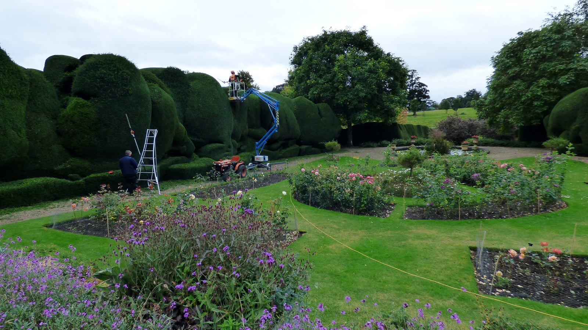
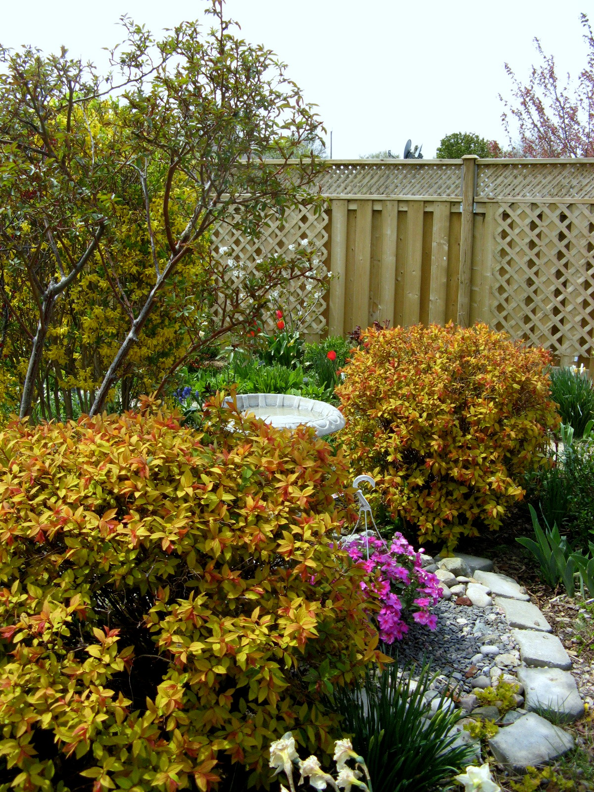

From a twice-a-year trim on a privet to taming a runaway leylandii, hedge work is about clean lines, healthy regrowth and taking every scrap of waste away.
Formal hedges get a crisp, level trim with the sides slightly battered so light reaches the base. Overgrown hedges can usually be reduced in stages - cutting back hard in one go shocks many species. Leylandii and other conifers are the exception: they won't regrow from old brown wood, so reductions are planned carefully or replacement is the honest advice. All arisings are chipped and removed.
A typical garden hedge trim runs £40 to £80. Big reductions on mature or tall hedges run £100 to £300+ depending on height, length and access. Hedge removal quoted per job.
Nesting birds are protected by law - major hedge work avoids March to August where nests are active. And if a hedge borders a pavement or road, keeping it cut back is the owner's responsibility, not the council's.

